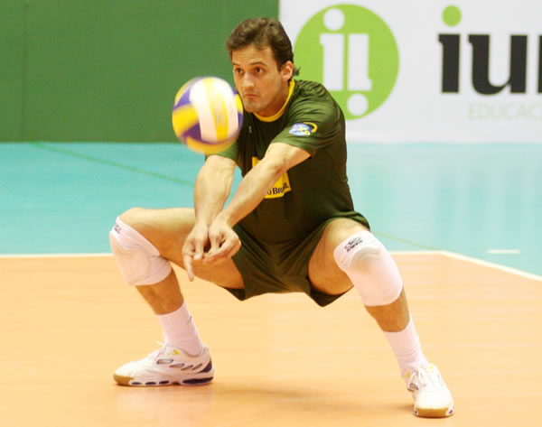
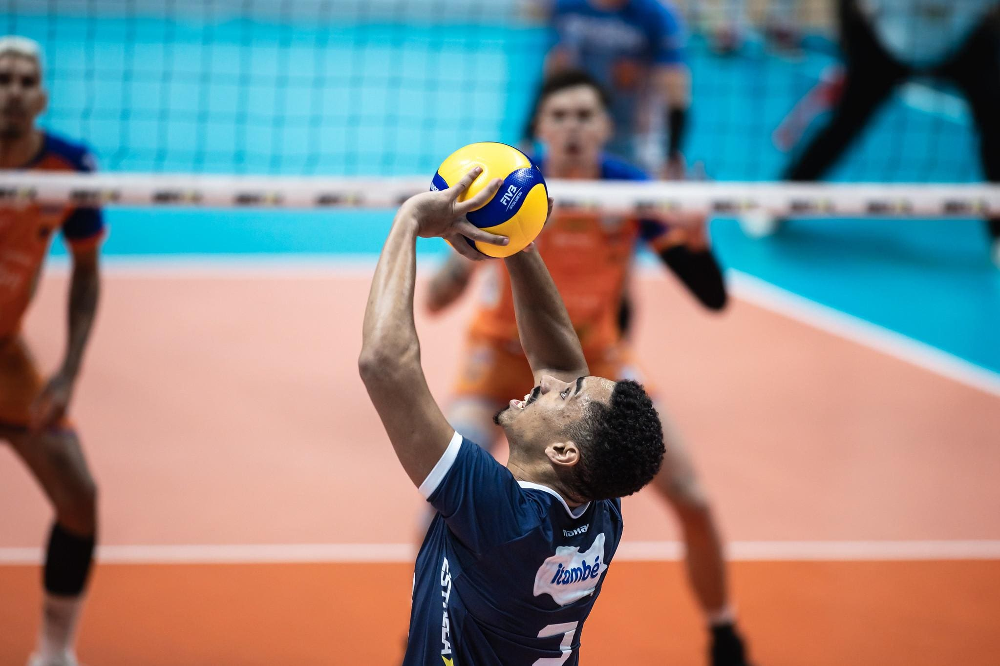
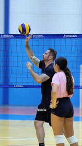
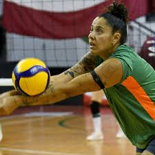

Defesa
A defesa no voleibol é um dos fundamentos mais importantes do jogo, responsável por evitar que a bola toque o chão após o ataque da equipe adversária. Ela exige atenção, reflexo, agilidade e bom posicionamento dos jogadores em quadra. Normalmente, a defesa é realizada com a manchete, mas também pode envolver mergulhos e movimentos rápidos para alcançar bolas difíceis. Uma defesa eficiente mantém a jogada viva, permitindo a organização do time para realizar um novo ataque.


Levantamento
O levantamento é o fundamento de precisão que serve como a ponte entre a defesa e o ataque. É o momento estratégico em que o jogador, geralmente o levantador, prepara a bola para que o atacante possa finalizá-la com potência ou habilidade. Realizado predominantemente com o toque (uso das pontas dos dedos acima da cabeça), o levantamento exige controle refinado, visão de jogo e uma leitura rápida do bloqueio adversário. Um bom levantamento não depende apenas da técnica das mãos, mas também de um posicionamento ágil das pernas para chegar rapidamente sob a bola. Ele é o "cérebro" do time: quando executado com perfeição, o levantamento desequilibra a defesa oponente e coloca o atacante em condições ideais para pontuar, sendo essencial para manter a fluidez e a agressividade tática da equipe.


